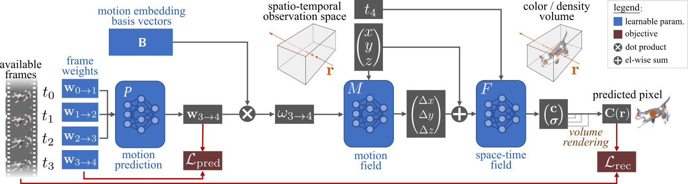

| PREF: Predictability Regularized Neural Motion Fields |
|
Liangchen Song1, Xuan Gong1, Benjamin Planche2, Meng Zheng2, David Doermann1, Junsong Yuan1, Terrence Chen2, and Ziyan Wu2 1 University at Buffalo, Buffalo NY, USA 2 United Imaging Intelligence, Cambridge MA, USA |
| Paper Colab (toy example) |
Overview
| Knowing the 3D motions in a dynamic scene is essential to many vision applications. Recent progress is mainly focused on estimating the activity of some specific elements like humans. In this paper, we leverage a neural motion field for estimating the motion of all points in a multiview setting. Modeling the motion from a dynamic scene with multiview data is challenging due to the ambiguities in points of similar color and points with time-varying color. We propose to regularize the estimated motion to be predictable. If the motion from previous frames is known, then the motion in the near future should be predictable. Therefore, we introduce a predictability regularization by first conditioning the estimated motion on latent embeddings, then by adopting a predictor network to enforce predictability on the embeddings. The proposed framework PREF (Predictability REgularized Fields) achieves on par or better results than state-of-the-art neural motion field-based dynamic scene representation methods, while requiring no prior knowledge of the scene. |
|  |
Video
Citation
@InProceedings{uii_eccv22_pref,
title={PREF: Predictability Regularized Neural Motion Fields},
author={Song, Liangchen and Gong, Xuan and Planche, Benjamin and Zheng, Meng
and Doermann, David and Yuan, Junsong and Chen, Terrence and Wu, Ziyan},
booktitle={European Conference on Computer Vision},
year={2022},
}